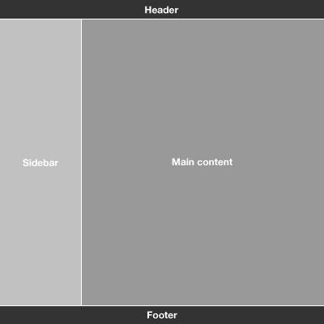

Journey Through MVC
Inspired by this article on nettuts+, I want to explore the amazing world of Javascript MVC, MVVM, MV*!!!
Chapter 1 - Slice the website into fine pieces...
First, we need to slice the page into section such as header, footer, sidebar and content.
Then we do the same for each of the "section" created.
For example, take the sidebar, it can contain a navigation, a list of element, a calendar... anything you want.
Image our View as an object and every part of the view an object as well.
Chapter 2 - Pub/Sub
In the Observer (Pub/Sub) pattern an object (Subscriber) subscribes to a specific task or activity of another object (Publisher) and is informed when it happens.
Addy Osmani published a few implementations with jQuery 1.7 of pub/sub in this gist
If you want more info about it read these articles:
Chapter 2.1 - Pub/Sub Usage
Suppose to have a widget on our page that have to perform a certain task when the 'date:arrived' event as triggered.
Simply subscribe the event and then publish web the day was clicked, that's it... AWESOME!!!